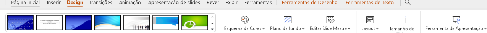
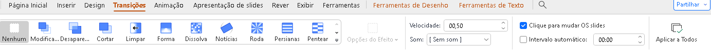
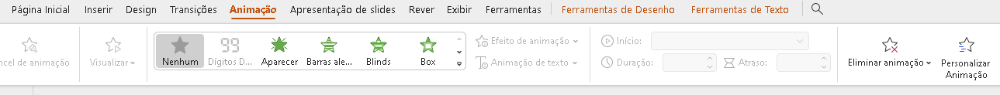
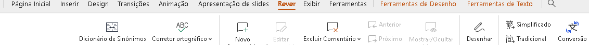
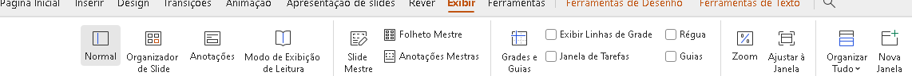

Página Inicial

Na página inicial do PowerPoint podemos criar ou abrir um arquivo existente.
Formatação de Fontes

Mudar a Cor da Fonte: Selecione o texto e clique na cor desejada na paleta de cores.
Tamanho da Fonte: Selecione o texto e escolha o tamanho desejado na lista suspensa.
Negrito, Itálico, Sublinhado: Selecione o texto e clique no ícone correspondente na barra de ferramentas.
Alinhamento do Texto: Selecione o texto e clique no ícone de alinhamento desejado na barra de ferramentas.
Inserir

Novo Slide: Clique em "Novo Slide" para adicionar um novo slide à apresentação.
Imagens/Formas/SmartArt/Tabelas/Gráficos/Vídeo/Áudio/Link: Clique na opção desejada e siga as instruções para inserir o elemento correspondente na apresentação.
Design
Nessa parte você pode escolher temas pré-definidos ou criar um personalizado.
Variantes de Temas/Efeitos/Tamanho dos Slides/Plano de Fundo/Layout dos Slides/Cores: Clique na opção desejada e siga as instruções para personalizar o design da apresentação.
Transições
Escolha de Transição: Selecione um efeito de transição para aplicar entre os slides.
Duração da Transição/Som da Transição/Avançar Slide: Personalize as configurações da transição conforme desejado.
Animações
Adicionar Animação: Selecione o objeto que deseja animar e escolha uma animação na galeria de animações.
Animação Personalizada/Duração da Animação/Iniciar Animação: Personalize a animação conforme desejado.
Apresentação de Slides

Apresentação de Slides do Início: Inicie a apresentação de slides do primeiro slide.
Apresentação de Slides Personalizada: Escolha opções de apresentação personalizadas.
Configurações da Apresentação de Slides: Configure opções de apresentação, como intervalos de tempo e slides ocultos.
Revisão
Ortografia: Verifique a ortografia do texto na apresentação.
Comentários: Adicione, visualize e responda a comentários na apresentação.
Comparar: Compare duas versões da apresentação para identificar diferenças.
Proteger Apresentação: Proteja a apresentação com uma senha ou restrições de edição.
Exibição
Modos de Exibição: Escolha entre diferentes modos de exibição da apresentação.
Zoom: Ajuste o zoom da apresentação para visualizar o conteúdo com mais detalhes.
Janela: Divida a janela da apresentação ou alterne entre diferentes apresentações.